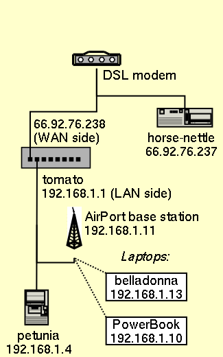

Our Happy Little Network
Our domain name, ropine.com, is derived from atropine, the heart
stimulant that makes "deadly nightshade" so deadly. (Atropine
... @ropine ... get it? Well, it seemed clever at the time.) All of
the machines on our network, therefore, are named after plants in the
nightshade (Solanaceae) family.
tomato
Thanks to the generosity of Andrew Greene, Heather Greene, Nomi Burstein, Michael Burstein, Jon Kamens, and Andrea Kamens, we
are the proud owners of a Linksys
BEFSR11 router and firewall. (They're geeks. We're geeks. They
wanted to give us a house-warming present. What could be more
appropriate?) Having this device between (most of) our computers and the DSL
line will spare me a valuable learning experience.
horse-nettle
This is an ancient 486 machine that I salvaged from Unique Simchas.
Before I got tomato, I was planning to use this machine as a
firewall. It serves static Web pages with publicfile and
lets us log in through ssh. It uses xntpd to keep track of the
time, thanks to the stratum-2 NTP servers at the University of
Massachusetts at Boston, the University of Delaware, and Columbia
University.
Using qmail, it
accepts email to and from ropine.com, and runs a
Courier IMAP
server, so I can read my mail remotely.
This machine also runs dnscache, so
it can be a caching proxy server, and tinydns, so it can be
the primary nameserver for ropine.com.
In order to provide DNS service to the rest of the Net,
horse-nettle can't run within the firewall (tomato's
implementation of NAT doesn't Do The Right Thing with inbound DNS
queries). To reduce its exposure to 31337 h@x0rs, horse-nettle
runs OpenBSD, the OS of choice
for paranoid geeks on low budgets.
petunia
This is my workstation, a 350 MHz Pentium II, which we bought in July
1999. The retailer, by the way, was PCs for Everyone -- if you're in
the Boston area and want a custom-built x86 computer, I strongly
recommend them.
One of the features that distinguishes petunia
from its neighbors is the case: after sliding it off, I can
reattach it without wrestling a square meter of metal.
Maybe the name-brand PC boxes are equally well-constructed, but
eggplant and horse-nettle were assembled by NPC (a
shop in Newton) and DTK Computer (I've never heard of them, either),
respectively, and they obviously cut corners on the quality of their
cases.
It runs the "unstable" distribution of
Debian GNU/Linux, as well as
PostgreSQL and
Apache. For a while,
I was using it to host an RT
server for our group's bug-tracking system.
eggplant
Jen got this computer, a Pentium 100, back in 1996. After the traumatic
experience of writing an eight-hundred-page dissertation in Microsoft
Word, she defenestrated Windows 95 from it, and we installed
Red Hat Linux 6.0.
Then, trying to use StarOffice 5.1
to keep track of the family finances, she suffered a further trauma,
but we couldn't find our Windows 95 CD, so we just decommissioned the
computer, bought a new Windows PC (so that Jen could play Command
and Conquer), and moved its hard drive into petunia.
belladonna
This is a Compaq Presario 710US laptop that Seth bought in the summer
of 2002. It has a wireless Ethernet card that communicates with an
AirPort base station behind the firewall. It runs the "stable"
distribution of Debian GNU/Linux.
Specifications
If you want to know more details about our hardware, here are the
dmesg printouts for horse-nettle, petunia, eggplant, and
belladonna.
Seth Gordon --
sethg@ropine.com -- February 2003 --
comments?